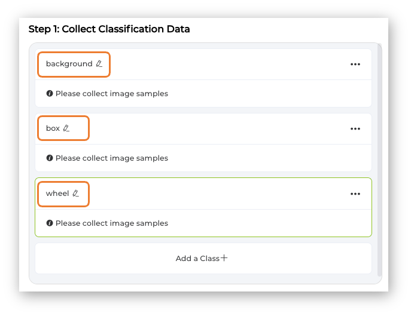
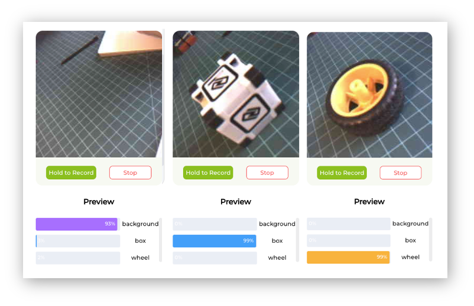

Image Classification
{kind=link}
Overview
We are increasingly facing an artificial intelligence (AI) revolution, where, as Gartner states, Edge AI and Computer Vision have a very high impact potential, and it is for now!
When we look into Machine Learning (ML) applied to vision, the first concept that greets us is Image Classification, a kind of ML’s Hello World that is both simple and profound!
The Seeed Studio XIAOML Kit provides a comprehensive hardware solution centered around theXIAO ESP32-S3 Sense, featuring an integrated OV3660 camera and SD card support. Those features make the XIAO ESP32S3 Sense an excellent starting point for exploring TinyML vision AI.
In this Lab, we will explore Image Classification using the non-code tool SenseCraft AI and explore a more detailed development with Edge Impulse Studio and Arduino IDE.
Deploy Pre-trained Models using SenseCraft AI Studio for immediate computer vision applications
Collect and Manage Image Datasets for custom classification tasks with proper data organization
Train Custom Image Classification Models using transfer learning with MobileNet V2 architecture
Optimize Models for Edge Deployment through quantization and memory-efficient preprocessing
Implement Post-processing Pipelines, including GPIO control and real-time inference integration
Compare Development Approaches between no-code and advanced ML platforms for embedded applications
Image Classification
Image classification is a fundamental task in computer vision that involves categorizing entire images into one of several predefined classes. This process entails analyzing the visual content of an image and assigning it a label from a fixed set of categories based on the dominant object or scene it depicts.
Image classification is crucial in various applications, ranging from organizing and searching through large databases of images in digital libraries and social media platforms to enabling autonomous systems to comprehend their surroundings. Common architectures that have significantly advanced the field of image classification include Convolutional Neural Networks (CNNs), such as AlexNet, VGGNet, and ResNet. These models have demonstrated remarkable accuracy on challenging datasets, such as ImageNet, by learning hierarchical representations of visual data.
As the cornerstone of many computer vision systems, image classification drives innovation, laying the groundwork for more complex tasks like object detection and image segmentation, and facilitating a deeper understanding of visual data across various industries. So, let’s start exploring the Person Classification model (“Person - No Person”), a ready-to-use computer vision application on the SenseCraft AI.
Image Classification on the SenseCraft AI Workspace
Start by connecting the XIAOML Kit (or just the XIAO ESP32S3 Sense, disconnected from the Expansion Board) to the computer via USB-C, and then open the SenseCraft AI Workspace to connect it.
Once connected, select the option [Select Model...] and enter in the search window: “Person Classification”. From the options available, select the one trained over the MobileNet V2 (passing the mouse over the models will open a pop-up window with its main characteristics).
Click on the chosen model and confirm the deployment. A new firmware for the model should start uploading to our device.
Note that the percentage of models downloaded and firmware uploaded will be displayed. If not, try disconnecting the device, then reconnect it and press the boot button.
After the model is uploaded successfully, we can view the live feed from the XIAO camera and the classification result (Person or Not a Person) in the Preview area, along with the inference details displayed in the Device Logger.
Note that we can also select our Inference Frame Interval, from “Real-Time” (Default) to 10 seconds, and the Mode (UART, I2C, etc) as the data is shared by the device (the default is UART via USB).
At the Device Logger, we can see that the latency of the model is from 52 to 78 ms for pre-processing and around 532ms for inference, which will give us a total time of a little less than 600ms, or about 1.7 Frames per second (FPS).
To run the Mobilenet V2 0.35, the XIAO had a peak current of 160mA at 5.23V, resulting in a power consumption of 830mW.
Post-Processing
An essential step in an Image Classification project pipeline is to define what we want to do with the inference result. So, imagine that we will use the XIAO to automatically turn on the room lights if a person is detected.
With the SebseCraft AI, we can do it on the Output -> GPIO section. Click on the Add icon to trigger the action when event conditions are met. A pop-up window will open, where you can define the action to be taken. For example, if a person is detected with a confidence of more than 60% the internal LED should be ON. In a real scenario, a GPIO, for example, D0, D1, D2, D11, or D12, would be used to trigger a relay to turn on a light.
Once confirmed, the created Trigger Action will be shown. Press Send to upload the command to the XIAO.
Now, pointing the XIAO at a person will make the internal LED go ON.
We will explore more trigger actions and post-processing techniques further in this lab.
An Image Classification Project
Let’s create a simple Image Classification project using SenseCraft AI Studio. Below, we can see a typical machine learning pipeline that will be used in our project.

On SenseCraft AI Studio: Let’s open the tab Training:
The default is to train a Classification model with a WebCam if it is available. Let’s select the XIAOESP32S3 Sense instead. Pressing the green button [Connect] will cause a Pop-Up window to appear. Select the corresponding Port and press the blue button [Connect].
The image streamed from the Grove Vision AI V2 will be displayed.
The Goal
The first step, as we can see in the ML pipeline, is to define a goal. Let’s imagine that we have an industrial installation that should automatically sort wheels and boxes.
So, let’s simulate it, classifying, for example, a toy box and a toy wheel. We should also include a 3rd class of images, background, where there are no objects in the scene.
Data Collection
Let’s create the classes, following, for example, an alphabetical order:
- Class1: background
- Class 2: box
- Class 3: wheel

Select one of the classes and keep pressing the green button (Hold to Record) under the preview area. The collected images (and their counting) will appear on the Image Samples Screen. Carefully and slowly, move the camera to capture different angles of the object. To modify the position or interfere with the image, release the green button, rearrange the object, and then hold it again to resume the capture.
After collecting the images, review them and delete any incorrect ones.
Collect around 50 images from each class and go to Training Step.
Note that it is possible to download the collected images to be used in another application, for example, with the Edge Impulse Studio.
Training
Confirm if the correct device is selected (XIAO ESP32S3 Sense) and press [Start Training]
Test
After training, the inference result can be previewed.
Note that the model is not running on the device. We are, in fact, only capturing the images with the device and performing a live preview using the training model, which is running in the Studio.

Now is the time to really deploy the model in the device.
Deployment
Select the trained model and XIAO ESP32S3 Sense at the Supported Devices window. And press [Deploy to device].
The SeneCrafit AI will redirect us to the Vision Workplace tab. Confirm the deployment, select the Port, and Connect it.
The model will be flashed into the device. After an automatic reset, the model will start running on the device. On the Device Logger, we can see that the inference has a latency of approximately 426 ms, plus a pre-processing of around 110ms, corresponding to a frame rate of 1.8 frames per second (FPS).
Also, note that in Settings, it is possible to adjust the model’s confidence.
To run the Image Classification Model, the XIAO ESP32S3 had a peak current of 14mA at 5.23V, resulting in a power consumption of 730mW.
As before, in the Output –> GPIO, we can turn the GPIOs or the Internal LED ON based on the detected class. For example, the LED will be turned ON when the wheel is detected.
Saving the Model
It is possible to save the model in the SenseCraft AI Studio. The Studio will retain all our models for later deployment. For that, return to the Training tab and select the button [Save to SenseCraft]:
Follow the instructions to enter the model’s name, description, image, and other details.
Note that the trained model (an Int8 MobileNet V2 with a size of 320KB) can be downloaded for further use or even analysis, for example, using Netron. Note that the model uses images of size 224x224x3 as its Input Tensor. In the next step, we will use different hyperparameters on the Edge Impulse Studio.
Also, the model can be deployed again to the device at any time. Automatically, the Workspace will be open on the SenseCraft AI.
Image Classification Project from a Dataset
The primary objective of our project is to train a model and perform inference on the XIAO ESP32S3 Sense. For training, we should find some data (in fact, tons of data!).
But as we alheady know, first of all, we need a goal! What do we want to classify?
With TinyML, a set of techniques associated with machine learning inference on embedded devices, we should limit the classification to three or four categories due to limitations (mainly memory). We can, for example, train the images captured for the Box versus Wheel, which can be downloaded from the SenseCraft AI Studio.
Alternatively, we can use a completely new dataset, such as one that differentiates apples from bananas and potatoes, or other categories. If possible, try finding a specific dataset that includes images from those categories. Kaggle fruit-and-vegetable-image-recognition is a good start.
Let’s download the dataset captured in the previous section. Open the menu (3 dots) on each of the captured classes and select Export Data.
The dataset will be downloaded to the computer as a .ZIP file, with one file for each class. Save them in your working folder and unzip them. You should have three folders, one for each class.
Optionally, you can add some fresh images, using, for example, the code discussed in the setup lab.
Training the model with Edge Impulse Studio
We will use the Edge Impulse Studio to train our model. Edge Impulse is a leading development platform for machine learning on edge devices.
Enter your account credentials (or create a free account) at Edge Impulse. Next, create a new project:
Data Acquisition
Next, go to the Data acquisition section and there, select + Add data. A pop-up window will appear. Select UPLOAD DATA.
After selection, a new Pop-Up window will appear, asking to update the data.
- In Upload mode:
select a folderand press[Choose Files]. - Go to the folder that contains one of the classes and press
[Upload]
- You will return automatically to the Upload data window.
- Select
Automatically split between training and testing - And enter the label of the images that are in the folder.
- Select
[Upload data] - At this point, the files will start to be uploaded, and after that, another Pop-Up window will appear asking if you are building an object detection project. Select
[no]
Repeat the procedure for all classes. Do not forget to change the label’s name. If you forget and the images are uploaded, please note that they will be mixed in the Studio. Do not worry, you can manually move the data between classes further.
Close the Upload Data window and return to the Data acquisition page. We can see that all dataset was uploaded. Note that on the upper panel, we can see that we have 158 items, all of which are balanced. Also, 19% of the images were left for testing.
Impulse Design
An impulse takes raw data (in this case, images), extracts features (resizes pictures), and then uses a learning block to classify new data.
Classifying images is the most common application of deep learning, but a substantial amount of data is required to accomplish this task. We have around 50 images for each category. Is this number enough? Not at all! We will need thousands of images to “teach” or “model” each class, allowing us to differentiate them. However, we can resolve this issue by retraining a previously trained model using thousands of images. We refer to this technique as “Transfer Learning” (TL). With TL, we can fine-tune a pre-trained image classification model on our data, achieving good performance even with relatively small image datasets, as in our case.
With TL, we can fine-tune a pre-trained image classification model on our data, performing well even with relatively small image datasets (our case).
So, starting from the raw images, we will resize them \((96\times 96)\) Pixels are fed to our Transfer Learning block. Let’s create an Inpulse.
At this point, we can also define our target device to monitor our “budget” (memory and latency). The XIAO ESP32S3 is not officially supported by Edge Impulse, so let’s consider the Espressif ESP-EYE, which is similar but slower.
Save the Impulse, as shown above, and go to the Image section.
Pre-processing (Feature Generation)
Besides resizing the images, we can convert them to grayscale or retain their original RGB color depth. Let’s select [RGB] in the Image section. Doing that, each data sample will have a dimension of 27,648 features (96x96x3). Pressing [Save Parameters] will open a new tab, Generate Features. Press the button [Generate Features]to generate the features.
Model Design, Training, and Test
In 2007, Google introduced MobileNetV1. In 2018, MobileNetV2: Inverted Residuals and Linear Bottlenecks, was launched, and, in 2019, the V3. The Mobilinet is a family of general-purpose computer vision neural networks explicitly designed for mobile devices to support classification, detection, and other applications. MobileNets are small, low-latency, low-power models parameterized to meet the resource constraints of various use cases.
Although the base MobileNet architecture is already compact and has low latency, a specific use case or application may often require the model to be even smaller and faster. MobileNets introduce a straightforward parameter, α (alpha), called the width multiplier to construct these smaller, less computationally expensive models. The role of the width multiplier α is to thin a network uniformly at each layer.
Edge Impulse Studio has available MobileNet V1 (96x96 images) and V2 (96x96 and 160x160 images), with several different α values (from 0.05 to 1.0). For example, you will get the highest accuracy with V2, 160x160 images, and α=1.0. Of course, there is a trade-off. The higher the accuracy, the more memory (around 1.3M RAM and 2.6M ROM) will be needed to run the model, implying more latency. The smaller footprint will be obtained at another extreme with MobileNet V1 and α=0.10 (around 53.2K RAM and 101K ROM).
We will use the MobileNet V2 0.35 as our base model (but a model with a greater alpha can be used here). The final layer of our model, preceding the output layer, will have 16 neurons with a 10% dropout rate for preventing overfitting.
Another necessary technique to use with deep learning is data augmentation. Data augmentation is a method that can help improve the accuracy of machine learning models by creating additional artificial data. A data augmentation system makes small, random changes to your training data during the training process (such as flipping, cropping, or rotating the images).
Under the hood, here you can see how Edge Impulse implements a data Augmentation policy on your data:
# Implements the data augmentation policy
def augment_image(image, label):
# Flips the image randomly
image = tf.image.random_flip_left_right(image)
# Increase the image size, then randomly crop it down to
# the original dimensions
resize_factor = random.uniform(1, 1.2)
new_height = math.floor(resize_factor * INPUT_SHAPE[0])
new_width = math.floor(resize_factor * INPUT_SHAPE[1])
image = tf.image.resize_with_crop_or_pad(image, new_height,
new_width)
image = tf.image.random_crop(image, size=INPUT_SHAPE)
# Vary the brightness of the image
image = tf.image.random_brightness(image, max_delta=0.2)
return image, labelNow, let’s us define the hyperparameters:
- Epochs: 20,
- Bach Size: 32
- Learning Rate: 0.0005
- Validation size: 20%
And, so, we have as a training result:
The model profile predicts 233 KB of RAM and 546 KB of Flash, indicating no problem with the Xiao ESP32S3, which has 8 MB of PSRAM. Additionally, the Studio indicates a latency of around 1160 ms, which is very high. However, this is to be expected, given that we are using the ESP-EYE, whose CPU is an Extensa LX6, and the ESP32S3 uses a newer and more powerful Xtensa LX7.
With the test data, we also achieved 100% accuracy, even with a quantized INT8 model. This result is not typical in real projects, but our project here is relatively simple, with two objects that are very distinctive from each other.
Model Deployment
We can deploy the trained model:
- As
.TFLITEto be used on the SenseCraft AI - As an
Arduino Libraryin the Edge Impulse Studio.
Let’s start with the SenseCraft, which is more straightforward and more intuitive.
Model Deployment on the SenseCraft AI
On the Dashboard, it is possible to download the trained model in several different formats. Let’s download TensorFlow Lite (int8 quantized), which has a size of 623KB.
On SenseCraft AI Studio, go to the Workspace tab, select XIAO ESP32S3, the corresponding Port, and connect the device.
You should see the last model that was uploaded to the device. Select the green button [Upload Model]. A pop-up window will prompt you to enter the model name, the model file, and the class names (objects). We should use labels in alphabetical order: 0: background, 1: box, and 2: wheel, and then press [Send].
After a few seconds, the model will be uploaded (“flashed”) to our device, and the camera image will appear in real-time on the Preview Sector. The Classification result will be displayed under the image preview. It is also possible to select the Confidence Threshold of your inference using the cursor on Settings.
On the Device Logger, we can view the Serial Monitor, where we can observe the latency, which is approximately 81 ms for pre-processing and 205 ms for inference, corresponding to a frame rate of 3.4 frames per second (FPS), what is double of we got, training the model on SenseCraft, because we are working with smaller images (96x96 versus 224x224).
The total latency is around 4 times faster than the estimation made in Edge Impulse Studio on an Xtensa LX6 CPU; now we are performing the inference on an Xtensa LX7 CPU.
Post-Processing
It is possible to obtain the output of a model inference, including Latency, Class ID, and Confidence, as shown on the Device Logger in SenseCraft AI. This allows us to utilize the XIAO ESP32S3 Sense as an AI sensor. In other words, we can retrieve the model data using different communication protocols such as MQTT, UART, I2C, or SPI, depending on our project requirements.
The idea is similar to what we have done on the Seeed Grove Vision AI V2 Image Classification Post-Processing Lab.
Below is an example of a connection using the I2C bus.

Please refer to the Seeed Studio Wiki for more information.
Model Deployment as an Arduino Library at EI Studio
On the Deploy section at Edge Impulse Studio, Select Arduino library, TensorFlow Lite, Quantized(int8), and press [Build]. The trained model will be downloaded as a .zip Arduino library:
Open your Arduino IDE, and under Sketch, go to Include Library and add .ZIP Library. Next, select the file downloaded from Edge Impulse Studio and press [Open].
Go to the Arduino IDE Examples and look for the project by its name (in this case: “Box_versus_Whell_…Interfering”. Open esp32 -> esp32_camera. The sketch esp32_camera.ino will be downloaded to the IDE.
This sketch was developed for the standard ESP32 and will not work with the XIAO ESP32S3 Sense. It should be modified. Let’s download the modified one from the project GitHub: Image_class_XIAOML-Kit.ino.
XIAO ESP32S3 Image Classification Code Explained
The code captures images from the onboard camera, processes them, and classifies them (in this case, “Box”, “Wheel”, or “Background”) using the trained model on EI Studio. It runs continuously, performing real-time inference on the edge device.
In short,:
Camera → JPEG Image → RGB888 Conversion → Resize to 96x96 → Neural Network → Classification Results → Serial Output
Key Components
- Library Includes and Dependencies
#include <Box_versus_Wheel_-_XIAO_ESP32S3_inferencing.h>
#include "edge-impulse-sdk/dsp/image/image.hpp"
#include "esp_camera.h"- Edge Impulse Inference Library: Contains our trained model and inference engine
- Image Processing: Provides functions for image manipulation
- ESP Camera: Hardware interface for the camera module
- Camera Pin Configurations
The XIAO ESP32S3 Sense can work with different camera sensors (OV2640 or OV3660), which may have different pin configurations. The code defines three possible configurations:
// Configuration 1: Most common OV2640 configuration
#define CONFIG_1_XCLK_GPIO_NUM 10
#define CONFIG_1_SIOD_GPIO_NUM 40
#define CONFIG_1_SIOC_GPIO_NUM 39
// ... more pinsThis flexibility allows the code to automatically try different pin mappings if the first one doesn’t work, making it more robust across different hardware revisions.
- Memory Management Settings
#define EI_CAMERA_RAW_FRAME_BUFFER_COLS 320
#define EI_CAMERA_RAW_FRAME_BUFFER_ROWS 240
#define EI_CLASSIFIER_ALLOCATION_HEAP 1- Frame Buffer Size: Defines the raw image size (320x240 pixels)
- Heap Allocation: Uses dynamic memory allocation for flexibility
- PSRAM Support: The ESP32S3 has 8MB of PSRAM for storing large data like images
setup() - Initialization
void setup() {
Serial.begin(115200);
while (!Serial);
if (ei_camera_init() == false) {
ei_printf("Failed to initialize Camera!\r\n");
} else {
ei_printf("Camera initialized\r\n");
}
ei_sleep(2000); // Wait 2 seconds before starting
}This function:
- Initializes serial communication for debugging output
- Initializes the camera with automatic configuration detection
- Waits 2 seconds before starting continuous inference
loop() - Main Processing Loop
The loop performs these steps continuously:
Step 1: Memory Allocation
snapshot_buf = (uint8_t*)ps_malloc(EI_CAMERA_RAW_FRAME_BUFFER_COLS *
EI_CAMERA_RAW_FRAME_BUFFER_ROWS *
EI_CAMERA_FRAME_BYTE_SIZE);Allocates memory for the image buffer, preferring PSRAM (faster external RAM) but falling back to regular heap if needed.
Step 2: Image Capture
if (ei_camera_capture((size_t)EI_CLASSIFIER_INPUT_WIDTH,
(size_t)EI_CLASSIFIER_INPUT_HEIGHT,
snapshot_buf) == false) {
ei_printf("Failed to capture image\r\n");
free(snapshot_buf);
return;
}Captures an image from the camera and stores it in the buffer.
Step 3: Run Inference
ei_impulse_result_t result = { 0 };
EI_IMPULSE_ERROR err = run_classifier(&signal, &result, false);Runs the machine learning model on the captured image.
Step 4: Output Results
for (uint16_t i = 0; i < EI_CLASSIFIER_LABEL_COUNT; i++) {
ei_printf(" %s: %.5f\r\n",
ei_classifier_inferencing_categories[i],
result.classification[i].value);
}Prints the classification results showing confidence scores for each category.
ei_camera_init() - Smart Camera Initialization
This function implements an intelligent initialization sequence:
bool ei_camera_init(void) {
// Try Configuration 1 (OV2640 common)
update_camera_config(1);
esp_err_t err = esp_camera_init(&camera_config);
if (err == ESP_OK) goto camera_init_success;
// Try Configuration 2 (OV3660)
esp_camera_deinit();
update_camera_config(2);
err = esp_camera_init(&camera_config);
if (err == ESP_OK) goto camera_init_success;
// Continue trying other configurations...
}The function:
- Tries multiple pin configurations
- Tests different clock frequencies (10MHz or 16MHz)
- Attempts PSRAM first, then falls back to DRAM
- Applies sensor-specific settings based on detected hardware
ei_camera_capture() - Image Processing Pipeline
bool ei_camera_capture(uint32_t img_width, uint32_t img_height, uint8_t *out_buf) {
// 1. Get frame from camera
camera_fb_t *fb = esp_camera_fb_get();
// 2. Convert JPEG to RGB888 format
bool converted = fmt2rgb888(fb->buf, fb->len, PIXFORMAT_JPEG, snapshot_buf);
// 3. Return frame buffer to camera driver
esp_camera_fb_return(fb);
// 4. Resize if needed
if (do_resize) {
ei::image::processing::crop_and_interpolate_rgb888(...);
}
}This function:
- Captures a JPEG image from the camera
- Converts it to RGB888 format (required by the ML model)
- Resizes the image to match the model’s input size (96x96 pixels)
Inference
- Upload the code to the XIAO ESP32S3 Sense.
⚠️ Attention
- The Xiao ESP32S3 MUST have the PSRAM enabled. You can check it on the Arduino IDE upper menu:
Tools–>PSRAM:OPI PSRAM- The Arduino Library (
esp32 by Espressif Systemsshould be version 2.017. Do not update it)
- Open the Serial Monitor
- Point the camera at the objects, and check the result on the Serial Monitor.
Post-Processing
In edge AI applications, the inference result is only as valuable as our ability to act upon it. While serial output provides detailed information for debugging and development, real-world deployments require immediate, human-readable feedback that doesn’t depend on external monitors or connections.
The XIAOML Kit tiny 0.42” OLED display (72×40 pixels) serves as a crucial post-processing component that transforms raw ML inference results into immediate, human-readable feedback—displaying detected class names and confidence levels directly on the device, eliminating the need for external monitors and enabling truly standalone edge AI deployment in industrial, agricultural, or retail environments where instant visual confirmation of AI predictions is essential.
So, let’s modify the sketch to automatically adapt to the model trained on Edge Impulse by reading the class names and count directly from the model. The display will show abbreviated class names (3 letters) with larger fonts for better visibility on the tiny 72x40 pixel display. Download the code from the GitHub: XIAOML-Kit-Img_Class_OLED_Gen.
Running the code, we can see the result:
Summary
The XIAO ESP32S3 Sense is a remarkably capable and flexible platform for image classification applications. Through this lab, we’ve explored two distinct development approaches that cater to different skill levels and project requirements.
The SenseCraft AI Studio provides an accessible entry point with its no-code interface, enabling rapid prototyping and deployment of pre-trained models like person detection. With real-time inference and integrated post-processing capabilities, it demonstrates how AI can be deployed without extensive programming or ML knowledge.
For more advanced applications, Edge Impulse Studio offers comprehensive machine learning pipeline tools, including custom dataset management, transfer learning with several pre-trained models, such as MobileNet, and model optimization.
Key insights from this lab include the importance of image resolution trade-offs, the effectiveness of transfer learning for small datasets, and the practical considerations of edge AI deployment, such as power consumption and memory constraints.
The Lab demonstrates fundamental TinyML principles that extend beyond this specific hardware: resource-constrained inference, real-time processing requirements, and the complete pipeline from data collection through model deployment to practical applications. With built-in post-processing capabilities including GPIO control and communication protocols, the XIAO serves as more than just an inference engine—it becomes a complete AI sensor platform.
This foundation in image classification prepares you for more complex computer vision tasks while showcasing how modern edge AI makes sophisticated computer vision accessible, cost-effective, and deployable in real-world embedded applications ranging from industrial automation to smart home systems.